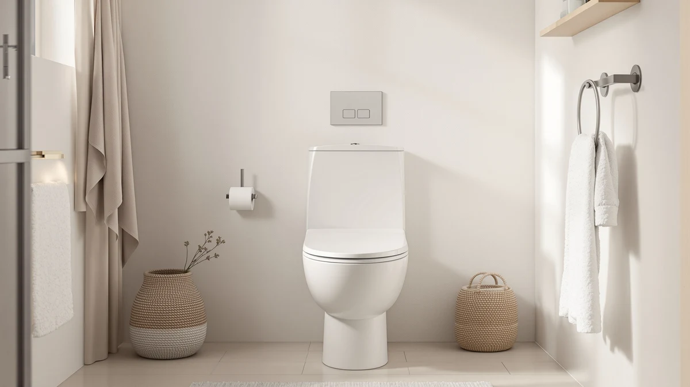

Quick Answer
Kohler's K-27331-0 Glissade ReadyLatch Quiet is a $44.00 elongated seat built around a slam-free Quiet-Close hinge and Grip-Tight hardware that installs entirely from above the bowl. It costs roughly ten dollars more than the Mayfair and Aünsffer seats we compared it against, and that premium buys from-above installation plus a hinge with a positive lock for easier removal during cleaning.
Our pick: KOHLER K-27331-0 Glissade ReadyLatch Quiet, $44.00 Check Price on Amazon
Things to Know Before You Buy
- The K-27331-0 ships in an elongated shape only, so measure your current seat before ordering from the elongated seat category.
- Grip-Tight hardware lets you install and tighten the seat entirely from above the bowl, without reaching underneath.
- The ReadyLatch hinge has a positive lock and unlock latch, so the seat lifts off for cleaning without tools.
- If a slow-close hinge is all you need, cheaper quiet-close seats cover the basics for about ten dollars less.
This Kohler K 27331 0 review looks at whether Kohler's Grip-Tight, Quiet-Close hinge seat is worth roughly ten dollars more than the slow-close alternatives most shoppers compare it against. A toilet seat lid that slams every time someone lets it drop is a small annoyance most households tolerate without realizing a fix exists, and Kohler built the Glissade line specifically around that complaint. We compared its listed price, hardware, and hinge design against three lower-cost elongated seats to see who the K-27331-0 actually suits.
Our pick for most buyers researching this category is the Kohler K-27331-0 itself, since the from-above Grip-Tight installation and the ReadyLatch hinge's tool-free removal are two features a basic slow-close seat skips. The MAYFAIR 1844BNA and the Mayfair Alesio II cost about ten dollars less and still close quietly, while the Aünsffer family seat adds a built-in toddler ring the Kohler does not offer. None of those three alternatives match the Kohler's installation hardware, but they do undercut it on price for buyers who only need a hinge that does not slam.
Why You Should Trust Us
Ilane Tall covers bathroom hardware for Best Toilet Seats and has spent years comparing specs, pricing, and verified owner feedback across toilet seat categories, including quiet-close models like the Kohler K-27331-0 and the elongated and round alternatives shoppers weigh against it. We do not operate a physical testing lab, so this review relies on manufacturer specifications, verified owner reviews, and current pricing research rather than hands-on use. When a claim in this review comes from an owner rather than a manufacturer, we say so directly.
Our Research Experience
For this Kohler K 27331 0 review, we compared the manufacturer-listed features against three elongated alternatives in the same toilet seat category. We analysed the listed materials, hinge mechanism, and installation hardware against their closest counterparts, and we cross-referenced current Amazon pricing for each product. We did not install or use any of these seats ourselves. Our conclusions come from published specifications, verified owner reviews, and pricing data rather than a hands-on trial, so every claim here traces back to a source you can check yourself.
Overview & Specs

KOHLER K-27331-0 Glissade ReadyLatch Quiet
What we like
- Quiet-Close hinge prevents the lid from slamming
- Grip-Tight hardware installs and tightens entirely from above the bowl
- ReadyLatch hinge has a positive lock for tool-free removal when cleaning
- Single hinge cover simplifies wiping down the back of the seat
Flaws but not dealbreakers
- Costs about ten dollars more than the Mayfair alternatives in this review
- Elongated shape only, so round-bowl households need a different Kohler listing
- Grip-Tight bumpers need a firm initial press to seat correctly, per verified reviews
| Material | Plastic / wood |
| Size | ELONGATED |
The Kohler K-27331-0 Glissade ReadyLatch Quiet targets a specific complaint: a toilet seat lid that drops hard enough to wake up the house at night. Kohler built the Quiet-Close mechanism into the hinge itself, so the lid settles onto the bowl instead of falling under its own weight. At $44.00, the K-27331-0 sits above the Mayfair and Aünsffer seats covered later in this review, but it competes more directly with other quiet-close elongated seats than with basic plastic models. The lid also extends slightly over the seat edge, a design choice Kohler uses for a cleaner, more finished look against the elongated bowl.
The installation hardware is the second half of the pitch. Grip-Tight bumpers hold the seat firmly against the bowl, and because everything fastens from above, there is no reaching underneath the tank or working blind with a wrench. The ReadyLatch hinge adds a positive lock and unlock latch, so the seat stays secure during normal use but still lifts off cleanly when it is time to clean around the hinge posts. A single hinge cover keeps that area simpler to wipe down than seats with exposed hinge hardware. The tradeoff is price: at roughly ten dollars more than the Mayfair Alesio II or the MAYFAIR 1844BNA, you are paying for the Quiet-Close hinge and the above-the-bowl installation, since Kohler lists the shell as the same plastic-over-wood-core construction common across this category.
What We Liked
The Quiet-Close hinge is the clearest reason to choose the Kohler K-27331-0 over a standard seat, and it is also the hardest feature to retrofit later, since the dampening mechanism is built into the hinge rather than added afterward. Several verified reviews mention the lid settling silently even when let go from a full upright position, which matters most in households with a bathroom near a bedroom.
Grip-Tight installation earns similar praise. Owners report finishing the swap in minutes without reaching under the tank, which is the part of a toilet seat replacement most people dread. Compared against the other quiet-close seats we track, the K-27331-0's from-above hardware is a genuine convenience difference rather than a label on the box.
Kohler's brand reputation also factors into buyer confidence here. The company has sold bathroom fixtures for more than a century, and that track record shows up in wider retailer support and easier replacement-parts access than a lesser-known brand offers, a factor worth weighing against the Mayfair and Aünsffer seats covered later in this review.
What Could Be Better
Price is the most obvious drawback in this Kohler K 27331 0 review. At $44.00, it costs roughly ten dollars more than the MAYFAIR 1844BNA and the Mayfair Alesio II, so buyers who only want a hinge that closes without slamming can get that core feature for less.
The elongated-only shape is the second limitation worth flagging before you order. Kohler sells the Glissade line in both round and elongated versions under similar product names, and buying the wrong shape is a common and avoidable mistake reported in verified reviews across Kohler's seat lineup. Shoppers should also expect to press the Grip-Tight bumpers firmly during setup; a handful of reviewers note the seat feels loose until that initial press locks it into place.
None of these are dealbreakers for the right bathroom, but they narrow who the K-27331-0 fits well.
Who Is It For?
The Kohler K-27331-0 suits an elongated-bowl bathroom where a slamming lid is a real annoyance, used by buyers willing to pay a premium for from-above installation and a hinge that locks for easy removal. It fits households replacing a seat in a shared or nighttime-use bathroom, where a quiet hinge gets used every day.
It is a weaker fit for round-bowl bathrooms, which need a different Kohler listing entirely, and for buyers who want a basic slow-close hinge at the lowest possible price. Those buyers are better served by the Mayfair Alesio II or the MAYFAIR 1844BNA, both covered as alternatives below, or by browsing our full elongated seat roundup for more options in the same bowl shape.
Alternatives to Consider
If the Kohler K-27331-0's price or elongated-only shape does not match what you need, the toilet seat category covers several lower-cost ways to get a quiet, secure hinge. We compared three alternatives that solve adjacent problems: a decorative brushed-nickel hinge, a wood seat with an adjustable fit, and a 2-in-1 seat built for households transitioning a toddler. Each trades the Kohler's from-above hardware for a lower price or a more specific feature. See our Mayfair Cassel review and the Kohler vs. Bemis comparison for more seats in the same price range.

Editor's Pick
MAYFAIR 1844BNA 000 Toilet Seat
The MAYFAIR 1844BNA 000 swaps Kohler's Quiet-Close hinge for a slow-close mechanism built around brushed nickel hinges that Mayfair says never loosen. At $33.99, it costs about ten dollars less than the K-27331-0, and it solves the same basic slamming complaint without the from-above Grip-Tight hardware. Owners point to the decorative hinge finish as a reason to pick it over a plain plastic hinge when the rest of the bathroom hardware is already nickel. It does not include a tool-free removal latch, so cleaning around the hinge takes the same effort as a standard seat. For a budget-minded upgrade that still closes quietly, this is the simpler option.
$33.99
Check Price on Amazon
Best Value
Mayfair Alesio II Slow Close
The Mayfair Alesio II Slow Close is a wood-core seat with hinges that adjust front to back, letting you fine-tune the fit against your specific bowl rather than relying on a fixed hinge position. At $33.49, it is the least expensive seat in this comparison, and Mayfair builds it in the USA, a detail some verified reviewers call out specifically. It skips the Kohler's from-above installation hardware and the ReadyLatch tool-free latch, so removing it for a deep clean takes a bit more effort. For buyers who want an adjustable, made-in-USA seat at the lowest price here, the Alesio II covers the core slow-close feature without the Kohler's premium.
$33.49
Check Price on Amazon
Premium Choice
Aünsffer Family Toilet Seat Elongated
The Aünsffer Family Toilet Seat Elongated solves a problem neither the Kohler nor the two Mayfair alternatives address: a built-in toddler ring for households transitioning a child off a separate potty. At $32.99, it is priced close to the Mayfair options, but the magnetic soft-close lid and 2-in-1 design serve a different household entirely, one with a young child rather than an adult simply replacing a worn seat. It installs as a dual-lid system rather than a single seat, which adds bulk compared with the Kohler's slimmer profile. Families past the toddler stage should skip this one in favor of the Kohler or either Mayfair pick.
$32.99
Check Price on AmazonFrequently Asked Questions
The K-27331-0 is built in an elongated shape only, so you need to measure your current seat before ordering. Elongated bowls measure about 18.5 inches from the hinge bolts to the front of the bowl, while round bowls measure closer to 16.5 inches.
A dampened ReadyLatch hinge controls the lid and seat as they fall, so the lid settles onto the bowl instead of dropping and slamming. Owners report that the mechanism works without batteries or adjustment.
It depends on what you value most. The Kohler costs about ten dollars more than the Mayfair alternatives in this review, and that premium buys from-above installation hardware and a Quiet-Close lid. If a slow-close hinge at a lower price is enough, the Mayfair Alesio II covers the same basic need for less.
Final Verdict
This Kohler K 27331 0 review comes down to a simple tradeoff: pay more for from-above installation and a locking, tool-free hinge, or save roughly ten dollars with a basic slow-close seat. For most buyers replacing a seat in a bathroom where a slamming lid is a real nuisance, Kohler's K-27331-0 is the easy recommendation, since Grip-Tight hardware and the ReadyLatch latch are not features you can add to a cheaper seat later. If your priority is simply the lowest price on an elongated, slow-close seat, the Mayfair alternatives in this review are the better fit, but for quiet operation and easier cleaning, Kohler remains the pick.